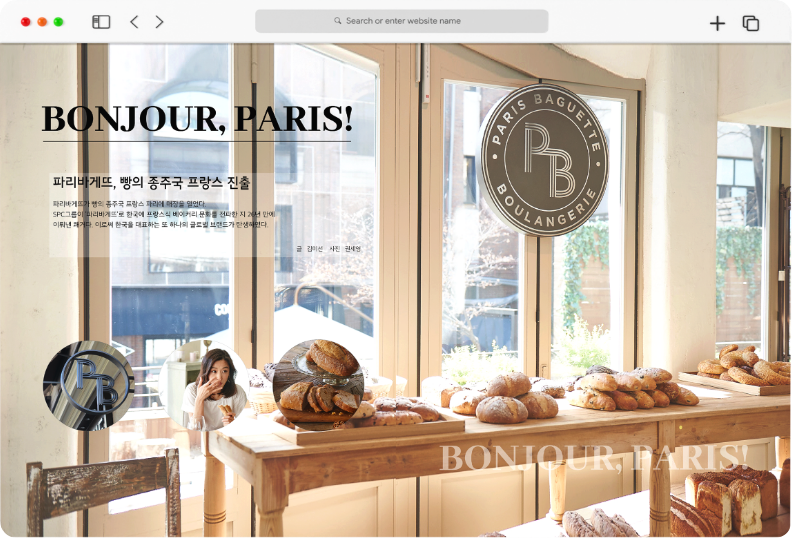
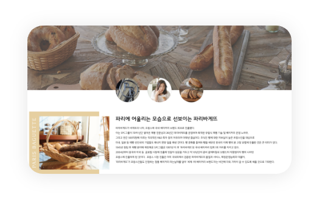
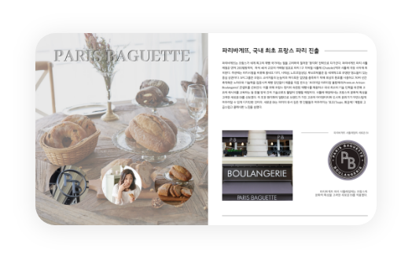
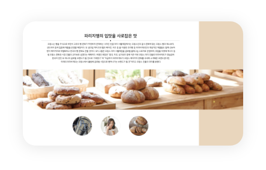

WEB
UI/UX DESIGN
전체적으로 따뜻한 갈색 톤의 색을 사용하여 빵 브랜드라는 것을 강조했습니다.
부드러운 통일감을 주고자 동그란 아이콘을 사용해 서브페이지로 연결했습니다.
슬로건인 'BONJOUR PARIS!' 를 대각선 대칭으로 배치하여 여백을 줄였습니다.
사이트 바로가기 >




'신선한 우유' 라는 슬로건을 강조하고자 청량한 푸른 계열의
색상을 주로 사용했고, 하늘 이미지를 삽입하였습니다.
우유팩에 들어갔던 젖소 패턴을 활용하여 통일감을 주었습니다.
사이트 바로가기 >


"수많은 나의 기록들, 한 곳에 모아서 볼 수 있다면?" 이라는 생각에서 시작된 디자인입니다. 기록이 습관인 사람들과 기록에 어려움을 느끼는 사람들 모두 만족할 수 있는 어플을 만들고 싶어 기획하였습니다.